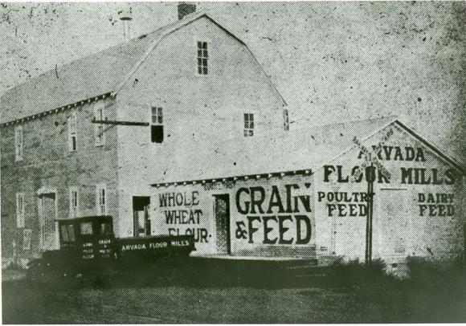

The City of Arvada
Founded in 1870 and incorporated in 1904, Arvada is located in Jefferson and Adams Counties just 10 miles from downtown Denver. Our beautiful community retains a small-town feel even with its estimated population of 120,000. Arvada enjoys a rich history, quiet tree-lined neighborhoods and a robust mix of business. Our strong civic leadership balances quality of life with an understanding and support of business and economic development.
Current Events Around Town
- July 22nd - 6:00pm - Taste of Arvada
More than 70 Denver and Arvada area restuarants bring their amazing food for YOU to taste and enjoy. - July 26th - 6:00pm - City Council Regular Workshop
Come join our City Council as they discuss this months happenings. - July 26th - 5:00pm - Majestic Gardens Tai Chi
Our monthly tai chi meeting takes place in Majestic View Park Gardens area. - August 7th to August 8th - Apex Family Camp Out
Enjoy a night under the stars camping at the Apex. Smore's and crafts provided. - August 20th - 7:00pm - Movies Around Town
This week's outdoor movie night will be featuring Finding Nemo. Popcorn provided! - August 21st - 10:00am to 3:00pm - Arvada Days Festival
After missing last year, we can't wait to see you all at our Annual Arvada Days event! - September 10th, 11th, and 12th - 95th Annual Arvada Harvest Festival
We're back! Join us for food, fun, and a fantastic time.
Arvada's History

Arvada’s story began with Colorado’s first gold discovery.
The roots of Arvada, Colorado go back to June 22, 1850, when Lewis Ralston made the first documented discovery of gold in Colorado. Ralston didn’t stay to capitalize on his discovery, but continued on his planned journey to the gold fields of California, later returning to his native Georgia. But in 1858, he guided a group of gold seekers back to the ancestral lands of the Cheyenne and Arapahoe to see if they could find their fortune on the banks of the creek which now bore his name.
At the confluence of Ralston and Clear Creeks, the explorers indeed found gold, but not enough to make much of a profit, even with the addition of sluice boxes powered by canals. They began to move upstream, in the hope of finding richer deposits, perhaps even veins of gold. And so they did, at Gregory Gulch, with the famous find that started the Gold Rush of 1859. Too bad Ralston went back to Georgia just in time to miss the bonanza.
However, the canals they dug proved to be extremely valuable to the real future of Arvada, farming. By 1870, the Colorado Central railroad had reached this far West, and enough people had moved into the area, that an official U.S. Post Office was requested. The leading citizen, Benjamin Franklin Wadsworth, asked his wife Mary Ann to name their new community. Her sister had married a man named Hiram Haskin. Hiram’s mother had chosen his middle name off a map in their old Scofield Bible. And so Arvada was born, named for an island off the coast of Syria.
Wadsworth and his friend Louis Reno plotted the town in 1870, marking its first existence in an organized fashion. Population at that time was about 100 people. Arvada was officially incorporated in 1904, and today boasts over a hundred thousand residents